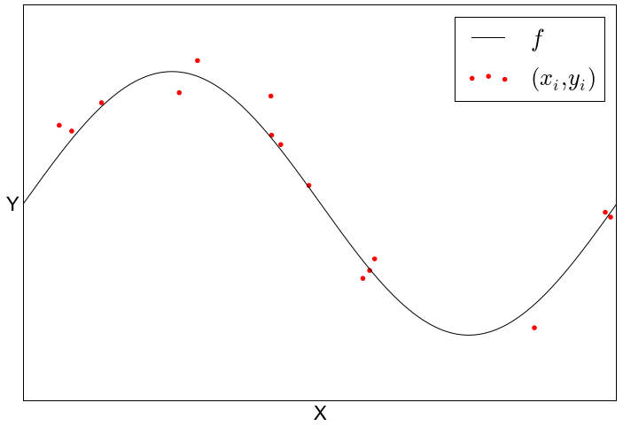
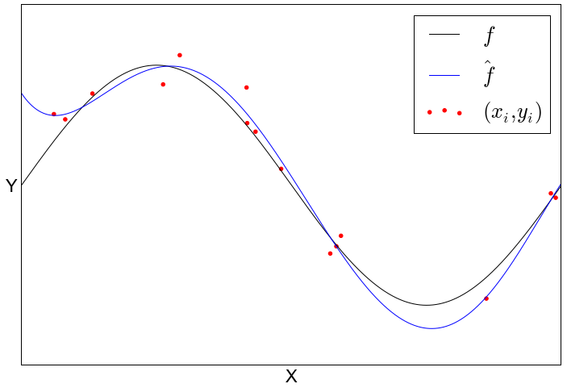

Or whatever you call it
- pattern recognition, data-mining, statistical learning, knowledge discovery, ...
Infer an unknown structure from a finite number of samples
In practise
- From $n$ data samples $ (x_i, y_i)_{i=1, \ldots, n}$
- Choose a model $f (x) = \beta_0 + \beta_1 x + \ldots + \beta_p x^p $
- Choose a loss function $E(f) = E(\mathbf{\beta}) = \sum_i (y_i - f(x_i))^2 $
- Optimize the model's parameter to minimize $E(f)$
- Validate the parameter generalize well by calculating $E(f)$ on test/unseen samples
|


|